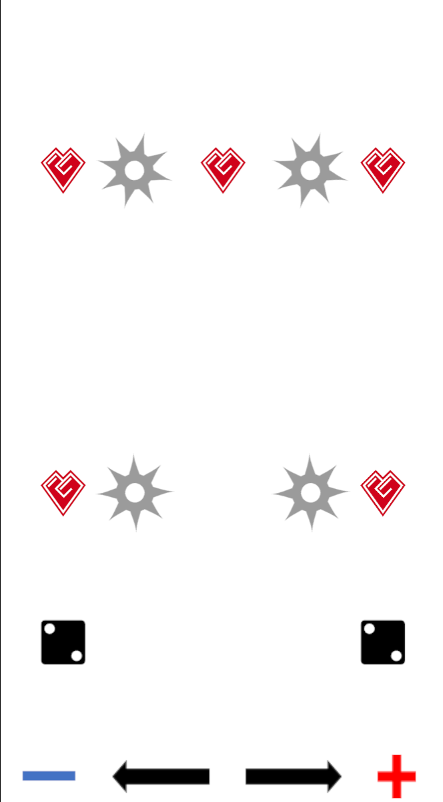

Block Avoid
左右スワイプで障害物を避けるシンプルなゲーム
- 開発環境: Unity
- 制作期間: 4か月
- 人数: 3人
- 担当: 障害物、アイテムの取得、効果の処理、SE、BGM
- チーム制作（2年前期）: 仕様から整理して実装
- 工夫: SE・BGMはファサードで呼び出しを統一
- 工夫: スポーン管理／Time.deltaTimeでフレーム非依存移動／画面外で自動破棄／取得イベント連動のスコア加算
- 設計: 難易度・ステージ進行はGameManagerの状態に連動（拡張しやすい構造）
- UnityRoom: https://unityroom.com/games/blockavoid